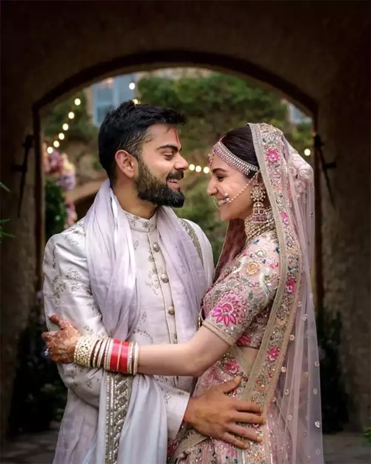
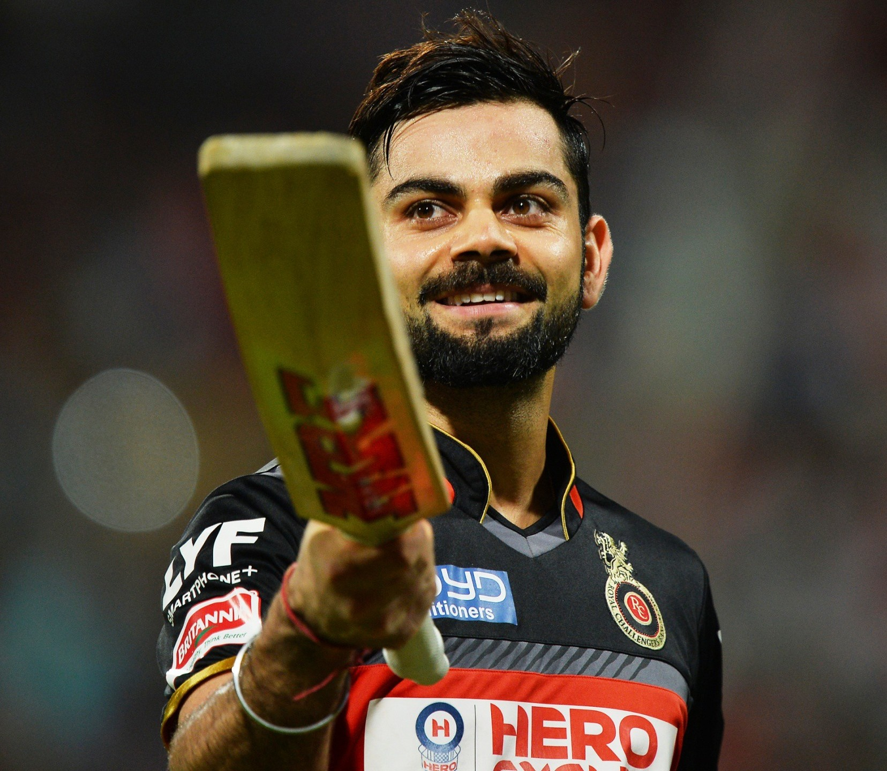

VIRAT KOHLI

Virat Kohli (Hindi pronunciation: [ʋɪˈɾɑːʈ ˈkoːɦli] ⓘ; born 5 November 1988) is an Indian international cricketer and the former captain of the Indian national cricket team. He is a right-handed batsman and an occasional medium-fast bowler. He currently represents Royal Challengers Bangalore in the IPL and Delhi in domestic cricket. Kohli is widely regarded as one of the greatest batsmen in the history of cricket and the best of the 21st century.He holds the record as the highest run-scorer in T20I and IPL, ranks third in ODI, and stands as the fourth-highest in international cricket.He also holds the record for scoring the most centuries in ODI cricket and stands second in the list of most international centuries scored. Kohli was a member of the Indian team that won the 2011 Cricket World Cup, 2013 ICC Champions Trophy, and captained India to win the ICC Test mace three consecutive times in 2017, 2018, and 2019.
Early Life
Virat Kohli was born on 5 November 1988 in Delhi into a Punjabi Hindu family. His father, Prem Kohli, worked as a criminal lawyer, and his mother, Saroj Kohli, served as a housewife. He has an older brother, Vikas, and an older sister, Bhawna. Kohli's formative years were spent in Uttam Nagar. He commenced his early education at Vishal Bharti Public School. According to his family, Kohli exhibited an early affinity for cricket as a mere three-year-old. He would pick up a cricket bat, display natural skill, and request his father to bowl to him.
In 1998, the West Delhi Cricket Academy (WCDA) was created. On 30 May of that year, Prem Kohli, who'd espoused his younger son's fervour for cricket, assisted nine-year-old Kohli's aspirations and arranged for him to meet Rajkumar Sharma, who initially perceived him to be just another enthusiastic and determined young boy. However, two weeks later, Sharma was impressed by Kohli's accuracy and power in throwing. Upon the suggestion of their neighbours, Kohli's father considered enrolling his son in a professional cricket academy, as they believed that his cricketing abilities merited more than just playing in gully cricket. Despite his abilities, he faced the setback of being unable to secure a place in the under-14 Delhi team, not due to a lack of merit but due to extraneous factors. Prem Kohli received offers to relocate his son to influential clubs, which would have ensured his selection, but he declined the proposals, as he was determined that Kohli should earn his recognition based on his own merit and overcome the system of nepotism and deceit prevalent in the Delhi and District Cricket Association (DDCA). Kohli persisted and eventually found his way into the under-15 Delhi team. He received training at the academy while simultaneously participating in matches at the Sumeet Dogra Academy located at Vasundhara Enclave.[14] As per Sharma's recollection of Kohli's initial days at his academy, he exuded remarkable talent, making it arduous for the coach to curb his enthusiasm. Kohli remained prepared to bat at any position, and often, Sharma had to physically coerce him to leave the training sessions, as he was reluctant to depart.In pursuit of furthering his cricketing career, he transitioned to Saviour Convent School during his ninth-grade education.Kohli's ardent passion for cricket compelled him to travel long distances with his father to ensure that he never missed a match. With time, he diligently honed his skills and diversified his range of shots, commanding respect from the local bowlers.
Personal Life

Kohli's romantic association with Bollywood actress Anushka Sharma, which commenced in 2013, earned the duo the moniker of "Virushka".During an interview with Graham Bensinger, Kohli divulged that he had encountered Sharma for the first time, when they were both were engaged in a promotional shoot for Clear shampoo.Their union since then has attracted significant media interest, with persistent rumours and speculations swirling around in the press, as both parties remained reticent about publicly discussing the relationship. On 11 December 2017, the couple exchanged nuptials in an intimate ceremony held in Florence, Italy, becoming one of the most talked-about celebrity couples in the country. On 11 January 2021, the couple had their first child, a daughter, who was named Vamika. The child's name, Vamika, is derived from Sanskrit, meaning "little goddess".On 15 February 2024, the couple welcomed their second child, a boy named Akaay.
In 2018, Kohli disclosed that he had made the decision to adopt a vegetarian diet in an effort to alleviate the symptoms of a cervical spine issue caused by elevated levels of uric acid. This condition was impacting his finger movements, and thus, affecting his performance as a batsman. He made a conscious effort to abstain from consuming meat, as part of his regimen for maintaining optimal health.He has since clarified that his dietary choices do not align with a vegan lifestyle and he continues to consume dairy products.Kohli is widely recognized for his physical fitness and intense training regimen.He has been an advocate of leading a healthy lifestyle, which involves regular exercise and a nutritious diet. His hard work and discipline in this area have earned him the reputation of being one of the fittest cricketers in the world.
Kohli has acknowledged to harbour a belief in superstitions. He has publicly avowed his reliance upon various lucky charms and rituals that he feels serve to bring him good fortune on the cricket field. One such tradition involves the donning of black wristbands, which he adheres to as a talismanic tradition. Additionally, he is known to prefer a particular pair of gloves, which he has consistently worn due to their supposed propensity to bring him success.Furthermore, Kohli has been observed sporting a kara, a traditional bangle often worn for religious or spiritual purposes, on his right arm since 2012.In addition to the previously mentioned superstitions, Kohli has also established the ritual of consistently donning white shoes on the cricket field.Kohli has tattoos of the revered Hindu deity Lord Shiva, the sacred syllable "Om", the names of his parents, Prem and Saroj, a tribal emblem, a representation of a serene monastery, a samurai warrior, the astrological symbol of the scorpion, and his ODl and Test match cap numbers.
ROYAL CHALLENGERS BANGLORE

At the outset of the 2015 season of the IPL, Kohli expressed his optimism about playing with reduced pressure, attributing it to the strengthened middle order of the Bangalore team.[391] Kohli strategically decided to open the batting alongside Gayle for the season. In the second match against the Sunrisers Hyderabad, he scored 41 runs, providing a moderate start to his campaign.[392] Continuing his form, Kohli achieved his first half-century of the season, albeit in a match that ended in defeat against the Chennai Super Kings.[393] In the subsequent match, Kohli again notched a fifty, leading Bangalore to victory and ending their three-match losing streak.[394] During this match, he exhibited his tactical acumen by promoting AB de Villiers up the batting order, recognizing the importance of having the team's premier batsman face more deliveries.[395] Bangalore, looking to overcome their previous struggles in the bowling department, successfully bowled out the Delhi Daredevils for 95 runs, while Kohli guided his team to a ten-wicket victory during the chase.[396] However, in an away game against Chennai, Kohli fell short of reaching a half-century, scoring 48 runs before being run out by Dwayne Bravo due to a momentary lapse in judgment. Bangalore's loss in that match marked the end of their winning streak.[397] His standout innings of the season came against the Mumbai Indians, where he played a knock of 82 runs, forming a record-breaking 215-run partnership with de Villiers.[398] In a rain-affected match against the Hyderabad, with a target of 83 runs to chase in six overs, Kohli scored quickfire 44 off 19 balls, earning him player of the match award.[399] In the subsequent game, Kohli found himself entangled in an incident involving an anti-corruption code breach. Nonetheless, he managed to continue playing due to breach's absence of severity.[400] Qualifying for the playoffs for the first time under his captaincy, Kohli held firm confidence in the turnaround his team had showcased during the later stages of the league.[401] However, in the qualifier 2 against Chennai, Kohli's dismissal for 12 runs proved detrimental to Bangalore's chances, resulting in their defeat and the conclusion of their campaign for the season. Throughout the season, Kohli accumulated a total of 505 runs in 16 matches with an average of 45.90, then third-highest run tally achieved by him in a single season.